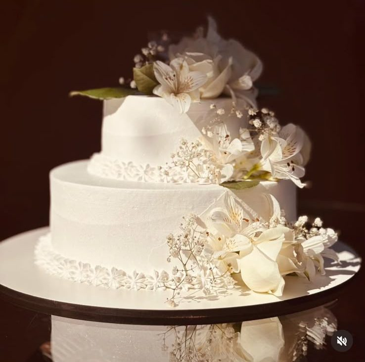
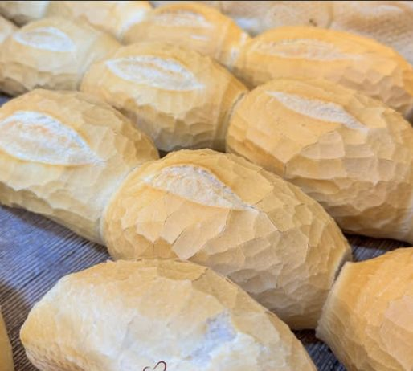
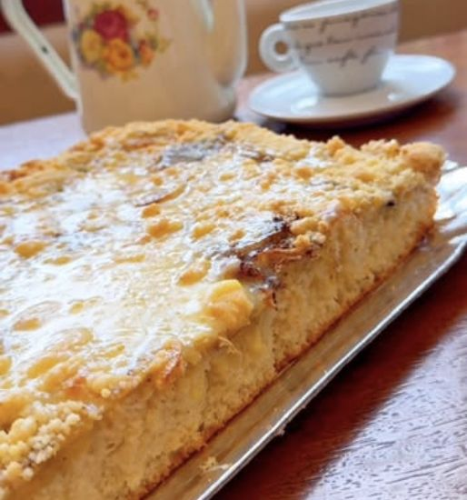
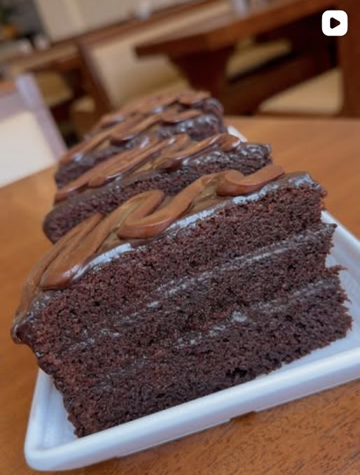
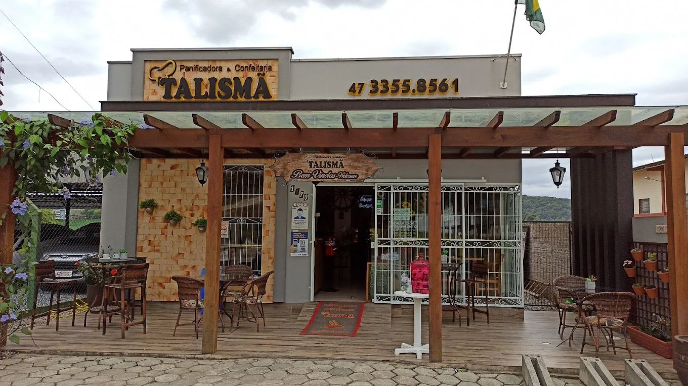

Pães, bolos e salgados de forno próprio. Há 16 anos, sabor que acolhe e carinho que fica.


Da cuca de queijinho ao bolo de chocolate, cada peça é feita no ritmo da casa.


Comunhão, aniversários e celebrações da família, sob encomenda e do jeito que você imaginou.
Encomendar um bolo →Conte para a gente o que você precisa e cuidamos do resto, com o mesmo carinho do balcão.
Veja os produtos nos destaques do nosso Instagram ou diga o que tem em mente.
Combine detalhes, sabores e data direto pelo WhatsApp.
Sua encomenda pronta, feita na hora e embalada com cuidado.
Varanda com pergolado, mesas ao ar livre e o cheiro de pão saindo do forno. A casa fica em Brusque, Santa Catarina.
